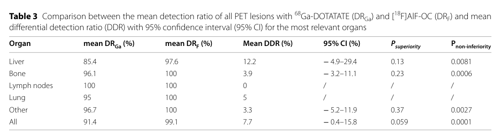

Gastroenteropancreatic neuroendocrine neoplasms (GEP-NENs) are a heterogeneous family of tumors arising from the diffuse neuroendocrine cell system of the digestive tract and pancreas. They derive from cells that produce hormones and neuropeptides and arise mostly sporadically, and to a lesser extent in the context of inherited syndromes such as MEN1, von Hippel-Lindau, neurofibromatosis type 1, and tuberous sclerosis. GEP-NENs span a wide biological spectrum, from indolent well-differentiated neuroendocrine tumors (NETs, graded G1/G2/G3 by Ki-67 proliferation index and mitotic rate) to highly aggressive poorly differentiated neuroendocrine carcinomas (NECs, small-cell and large-cell types). Tumors are further classified as functional (secreting bioactive hormones such as serotonin, insulin, gastrin, glucagon, or VIP and producing distinct clinical syndromes) or non-functional. Anatomic sites include the stomach, duodenum, small intestine, appendix, colon, rectum, and pancreas. The incidence of neuroendocrine tumors has risen sharply over recent decades, with gastroenteropancreatic sites the most common location. Pancreatic NETs are characterized by recurrent inactivation of MEN1, DAXX/ATRX, and mTOR pathway genes; small-intestinal NETs by chromosome 18 loss and a low mutation burden; and poorly differentiated NECs by TP53 and RB1 inactivation. Nearly all well-differentiated GEP-NETs express somatostatin receptors, which underpin both molecular imaging (SSTR PET) and somatostatin-analog and peptide receptor radionuclide therapy (PRRT).
Ask a research question about Gastroenteropancreatic Neuroendocrine Neoplasm. OpenScientist will conduct autonomous deep research using the Disorder Mechanisms Knowledge Base and PubMed literature (typically 10-30 minutes).
Do not include personal health information in your question. Questions and results are cached in your browser's local storage.
name: Gastroenteropancreatic Neuroendocrine Neoplasm
creation_date: "2026-06-17T00:00:00Z"
description: >-
Gastroenteropancreatic neuroendocrine neoplasms (GEP-NENs) are a heterogeneous
family of tumors arising from the diffuse neuroendocrine cell system of the
digestive tract and pancreas. They derive from cells that produce hormones and
neuropeptides and arise mostly sporadically, and to a lesser extent in the
context of inherited syndromes such as MEN1, von Hippel-Lindau, neurofibromatosis
type 1, and tuberous sclerosis. GEP-NENs span a wide biological spectrum, from
indolent well-differentiated neuroendocrine tumors (NETs, graded G1/G2/G3 by Ki-67
proliferation index and mitotic rate) to highly aggressive poorly differentiated
neuroendocrine carcinomas (NECs, small-cell and large-cell types). Tumors are
further classified as functional (secreting bioactive hormones such as serotonin,
insulin, gastrin, glucagon, or VIP and producing distinct clinical syndromes) or
non-functional. Anatomic sites include the stomach, duodenum, small intestine,
appendix, colon, rectum, and pancreas. The incidence of neuroendocrine tumors has
risen sharply over recent decades, with gastroenteropancreatic sites the most common
location. Pancreatic NETs are characterized by recurrent inactivation of MEN1,
DAXX/ATRX, and mTOR pathway genes; small-intestinal NETs by chromosome 18 loss and a
low mutation burden; and poorly differentiated NECs by TP53 and RB1 inactivation.
Nearly all well-differentiated GEP-NETs express somatostatin receptors, which
underpin both molecular imaging (SSTR PET) and somatostatin-analog and peptide
receptor radionuclide therapy (PRRT).
categories:
- Solid Tumor
- Gastrointestinal Cancer
- Neuroendocrine Neoplasm
parents:
- digestive system neoplasm
- neuroendocrine neoplasm
disease_term:
preferred_term: gastroenteropancreatic neuroendocrine neoplasm
term:
id: MONDO:0024503
label: digestive system neuroendocrine neoplasm
classifications:
harrisons_chapter:
- classification_value: ONCOLOGY_HEMATOLOGY
evidence:
- reference: PMID:28448665
supports: SUPPORT
evidence_source: HUMAN_CLINICAL
snippet: >-
Trends in the Incidence, Prevalence, and Survival Outcomes in Patients With
Neuroendocrine Tumors in the United States
explanation: >-
GEP-NENs are solid neoplasms managed within oncology, fitting the Harrison's
Oncology and Hematology Part.
inheritance:
- name: Sporadic (somatic)
description: >-
The large majority of GEP-NENs arise sporadically through somatic driver
alterations (MEN1, DAXX/ATRX, mTOR-pathway genes in pancreatic NETs; TP53/RB1
in NECs) without a germline predisposition.
- name: Autosomal dominant (syndromic)
inheritance_term:
preferred_term: Autosomal dominant inheritance
term:
id: HP:0000006
label: Autosomal dominant inheritance
description: >-
A minority of GEP-NENs occur within autosomal dominant tumor-predisposition
syndromes, most prominently multiple endocrine neoplasia type 1 (MEN1), and
also von Hippel-Lindau, neurofibromatosis type 1, and tuberous sclerosis.
evidence:
- reference: PMID:21252315
supports: SUPPORT
evidence_source: HUMAN_CLINICAL
snippet: >-
MEN1 is a tumor suppressor gene which, when mutated in the germline, predisposes
to multiple endocrine neoplasia type 1 syndrome.
explanation: >-
Jiao et al. note that germline MEN1 mutation underlies the autosomal dominant
MEN1 syndrome, the prototypical hereditary context for GEP-NENs.
has_subtypes:
- name: Well-Differentiated NET G1
display_name: Well-differentiated neuroendocrine tumor, grade 1
description: >-
Low-grade well-differentiated neuroendocrine tumor with Ki-67 proliferation
index <3% and mitotic count <2 per 2 mm2. Indolent biology with the most
favorable prognosis.
- name: Well-Differentiated NET G2
display_name: Well-differentiated neuroendocrine tumor, grade 2
description: >-
Intermediate-grade well-differentiated neuroendocrine tumor with Ki-67 of
3-20% or mitotic count of 2-20 per 2 mm2.
- name: Well-Differentiated NET G3
display_name: Well-differentiated neuroendocrine tumor, grade 3
description: >-
High-grade but still well-differentiated neuroendocrine tumor with Ki-67 >20%.
Biologically and therapeutically distinct from poorly differentiated NEC,
retaining organoid architecture and somatostatin receptor expression.
- name: Neuroendocrine Carcinoma
display_name: Poorly differentiated neuroendocrine carcinoma (NEC)
description: >-
Poorly differentiated, high-grade neuroendocrine carcinoma (small-cell or
large-cell type) with Ki-67 typically >55%, frequent TP53 and RB1 inactivation,
rapid growth, and poor prognosis. Managed with platinum-etoposide chemotherapy
analogous to small-cell lung carcinoma.
- name: Insulinoma
description: >-
Functional pancreatic NET secreting insulin and causing recurrent
hyperinsulinemic hypoglycemia (Whipple triad). Most are small, solitary, and
benign.
- name: Gastrinoma
description: >-
Functional gastrinoma (duodenal or pancreatic) secreting gastrin and causing
Zollinger-Ellison syndrome with gastric acid hypersecretion, recurrent peptic
ulcers, and diarrhea. About 25% occur in MEN1.
- name: Serotonin-Producing Carcinoid
display_name: Serotonin-producing NET (carcinoid)
description: >-
Serotonin-secreting well-differentiated NET, classically of the small intestine
(midgut), causing carcinoid syndrome (flushing, diarrhea, carcinoid heart
disease) when hepatic metastases bypass first-pass hepatic clearance.
- name: VIPoma
description: >-
Functional pancreatic NET secreting vasoactive intestinal peptide (VIP),
producing the Verner-Morrison syndrome of watery diarrhea, hypokalemia, and
achlorhydria (WDHA syndrome).
- name: Glucagonoma
description: >-
Functional pancreatic NET secreting glucagon, causing the glucagonoma syndrome
of necrolytic migratory erythema, diabetes mellitus, weight loss, and venous
thromboembolism.
pathophysiology:
- name: Neuroendocrine Cell Origin and Differentiation
description: >-
GEP-NENs arise from the diffuse neuroendocrine cell compartment of the
gastrointestinal tract and pancreatic islets. These cells specialize in
producing hormones and neuropeptides and share a neuroendocrine phenotype
expressing chromogranin A and synaptophysin. Tumor cells retain features of
their cell of origin, including dense-core secretory granules and regulated
hormone secretion.
cell_types:
- preferred_term: neuroendocrine cell
term:
id: CL:0000165
label: neuroendocrine cell
- preferred_term: enteroendocrine cell
term:
id: CL:0000164
label: enteroendocrine cell
biological_processes:
- preferred_term: peptide hormone secretion (regulated neuroendocrine release)
modifier: DYSREGULATED
term:
id: GO:0030072
label: peptide hormone secretion
downstream:
- target: Somatostatin Receptor Overexpression
description: >-
The retained neuroendocrine differentiation program underlies strong
somatostatin receptor expression in well-differentiated GEP-NETs, which
enables SSTR-targeted imaging and therapy.
- target: Serotonin Hypersecretion and Carcinoid Syndrome
description: >-
Enterochromaffin-lineage neuroendocrine cells of the midgut secrete
serotonin, driving carcinoid syndrome when tumor burden bypasses hepatic
clearance.
evidence:
- reference: PMID:28448665
supports: SUPPORT
evidence_source: HUMAN_CLINICAL
snippet: >-
In the SEER 18 registry grouping (2000-2012), the highest incidence
rates were 1.49 per 100 000 in the lung, 3.56 per 100 000 in
gastroenteropancreatic sites
explanation: >-
The Dasari SEER analysis establishes gastroenteropancreatic sites as the
most common location of neuroendocrine tumors, anchoring the GEP-NEN concept.
- name: MEN1 Tumor Suppressor Inactivation
description: >-
Loss-of-function mutations in MEN1 (encoding menin) occur in approximately 44%
of sporadic pancreatic NETs and define the hereditary MEN1 syndrome. Menin is a
chromatin-modifying scaffold for the MLL/SET1-like histone methyltransferase
complex regulating H3K4 methylation. Loss disrupts epigenetic control of cell
cycle genes, driving uncontrolled proliferation of islet cells.
cell_types:
- preferred_term: pancreatic endocrine cell
term:
id: CL:0008024
label: pancreatic endocrine cell
biological_processes:
- preferred_term: chromatin organization
modifier: DYSREGULATED
term:
id: GO:0006325
label: chromatin organization
- preferred_term: cell population proliferation
modifier: INCREASED
term:
id: GO:0008283
label: cell population proliferation
downstream:
- target: mTOR Pathway Activation
description: >-
Epigenetic dysregulation cooperates with mTOR pathway lesions in driving
pancreatic NET proliferation.
evidence:
- reference: PMID:21252315
supports: SUPPORT
evidence_source: HUMAN_CLINICAL
snippet: >-
44% of the tumors had somatic inactivating mutations in MEN1, which encodes
menin, a component of a histone methyltransferase complex
explanation: >-
Jiao et al. whole-exome sequencing established MEN1 as the most frequently
mutated gene in sporadic pancreatic NETs and identified its chromatin-remodeling
role.
- name: DAXX/ATRX Chromatin Remodeling Deficiency
description: >-
Mutually exclusive inactivating mutations in DAXX (~25%) or ATRX (~18%) occur in
roughly 43% of pancreatic NETs. DAXX and ATRX form a complex depositing histone
variant H3.3 at telomeres and pericentric heterochromatin; loss drives
alternative lengthening of telomeres (ALT) and chromosomal instability.
cell_types:
- preferred_term: pancreatic endocrine cell
term:
id: CL:0008024
label: pancreatic endocrine cell
biological_processes:
- preferred_term: telomere maintenance
modifier: DYSREGULATED
term:
id: GO:0000723
label: telomere maintenance
- preferred_term: chromatin organization
modifier: DYSREGULATED
term:
id: GO:0006325
label: chromatin organization
evidence:
- reference: PMID:21252315
supports: SUPPORT
evidence_source: HUMAN_CLINICAL
snippet: >-
43% had mutations in genes encoding either of the two subunits of a
transcription/chromatin remodeling complex consisting of DAXX
(death-domain-associated protein) and ATRX
explanation: >-
Jiao et al. identified DAXX/ATRX as the second most commonly altered pathway in
pancreatic NETs, with mutual exclusivity between the two genes.
- name: mTOR Pathway Activation
description: >-
Mutations in mTOR pathway genes (PTEN, TSC2, PIK3CA) occur in approximately 14%
of pancreatic NETs, producing constitutive PI3K/AKT/mTOR signaling that drives
growth, proliferation, and angiogenesis. This pathway is the therapeutic target
of the mTOR inhibitor everolimus.
biological_processes:
- preferred_term: TORC1 signaling
modifier: INCREASED
term:
id: GO:0038202
label: TORC1 signaling
- preferred_term: PI3K/AKT signaling
modifier: INCREASED
term:
id: GO:0043491
label: phosphatidylinositol 3-kinase/protein kinase B signal transduction
- preferred_term: cell population proliferation
modifier: INCREASED
term:
id: GO:0008283
label: cell population proliferation
evidence:
- reference: PMID:21252315
supports: SUPPORT
evidence_source: HUMAN_CLINICAL
snippet: >-
We also found mutations in genes in the mTOR (mammalian target of rapamycin)
pathway in 14% of the tumors, a finding that could potentially be used to
stratify patients for treatment with mTOR inhibitors.
explanation: >-
Jiao et al. identified mTOR pathway mutations at 14% frequency and proposed
their use for therapeutic stratification.
- reference: PMID:21306238
supports: SUPPORT
evidence_source: HUMAN_CLINICAL
snippet: >-
Everolimus, as compared with placebo, significantly prolonged progression-free
survival among patients with progressive advanced pancreatic neuroendocrine
tumors and was associated with a low rate of severe adverse events.
explanation: >-
The RADIANT-3 trial validates mTOR-pathway activation as a clinically
actionable mechanism in advanced pancreatic NETs.
- name: Somatostatin Receptor Overexpression
description: >-
Most well-differentiated GEP-NETs strongly overexpress somatostatin receptors
(predominantly SSTR2). Somatostatin receptor signaling inhibits hormone secretion
and cell proliferation; pharmacologic engagement with somatostatin analogs
controls hormonal syndromes and exerts an antiproliferative effect, while
receptor expression enables SSTR-targeted imaging and peptide receptor
radionuclide therapy.
cell_types:
- preferred_term: neuroendocrine cell
term:
id: CL:0000165
label: neuroendocrine cell
biological_processes:
- preferred_term: somatostatin signaling pathway
modifier: INCREASED
term:
id: GO:0038170
label: somatostatin signaling pathway
evidence:
- reference: PMID:28076709
supports: SUPPORT
evidence_source: HUMAN_CLINICAL
snippet: >-
This randomized, controlled trial evaluated the efficacy
and safety of lutetium-177 (177Lu)-Dotatate in patients with advanced,
progressive, somatostatin-receptor-positive midgut neuroendocrine tumors.
explanation: >-
The NETTER-1 trial confirms that GEP-NETs express somatostatin receptors,
enabling somatostatin-receptor-targeted radionuclide therapy.
- name: Serotonin Hypersecretion and Carcinoid Syndrome
description: >-
Serotonin-producing well-differentiated NETs, classically of the small intestine,
secrete serotonin and other vasoactive mediators. When hepatic metastases bypass
first-pass hepatic clearance, systemic serotonin drives carcinoid syndrome
(flushing, secretory diarrhea) and, through chronic valvular endocardial fibrosis,
carcinoid heart disease.
cell_types:
- preferred_term: serotonin-secreting enterochromaffin cell
term:
id: CL:0000577
label: type EC enteroendocrine cell
biological_processes:
- preferred_term: serotonin and vasoactive hormone secretion
modifier: INCREASED
term:
id: GO:0046879
label: hormone secretion
evidence:
- reference: PMID:32322270
supports: SUPPORT
evidence_source: HUMAN_CLINICAL
snippet: >-
Neuroendocrine neoplasms can produce
multiple hormones: 5-hydroxytryptamine (serotonin) is the most well-known one,
but histamine, catecholamines, and brady/tachykinins are also released.
explanation: >-
This dedicated carcinoid-syndrome review confirms that neuroendocrine neoplasms
hypersecrete serotonin (5-hydroxytryptamine) together with other vasoactive
mediators, the driver of carcinoid syndrome in serotonin-producing midgut NETs.
- reference: PMID:32322270
supports: SUPPORT
evidence_source: HUMAN_CLINICAL
snippet: >-
Serotonin overproduction can lead to symptoms and also stimulates fibrosis
formation which can result in development of carcinoid syndrome-associated
complications such as carcinoid heart disease (CaHD) and mesenteric fibrosis.
explanation: >-
Serotonin overproduction drives the secretory symptoms of carcinoid syndrome and,
through chronic fibrosis, carcinoid heart disease, supporting this node's claim.
- name: TP53/RB1 Inactivation in Neuroendocrine Carcinoma
description: >-
Poorly differentiated neuroendocrine carcinomas (small-cell and large-cell) are
genetically distinct from well-differentiated NETs, characterized by frequent
inactivation of the TP53 and RB1 tumor suppressors. This drives loss of cell-cycle
control, genomic instability, rapid proliferation, and a clinical course resembling
small-cell lung carcinoma.
biological_processes:
- preferred_term: cell cycle checkpoint dysregulation
modifier: DYSREGULATED
term:
id: GO:0000075
label: cell cycle checkpoint signaling
- preferred_term: cell population proliferation
modifier: INCREASED
term:
id: GO:0008283
label: cell population proliferation
evidence:
- reference: PMID:34880079
supports: SUPPORT
evidence_source: HUMAN_CLINICAL
snippet: >-
Alterations in TP53 and RB1 proved common in GIS-NECs, and most Nonpanc-NECs
with intact RB1 demonstrated mutually exclusive amplification of CCNE1 or MYC.
explanation: >-
Yachida et al. comprehensively profiled 115 gastrointestinal neuroendocrine
carcinomas and found TP53 and RB1 alterations common in GIS-NECs, directly
supporting TP53/RB1 inactivation as the defining genomic mechanism of NEC.
- reference: PMID:34880079
supports: SUPPORT
evidence_source: HUMAN_CLINICAL
snippet: >-
found GIS-NECs to be genetically distinct from neuroendocrine tumors
explanation: >-
The same study establishes that poorly differentiated GIS-NECs are genetically
distinct from well-differentiated neuroendocrine tumors of the same location,
supporting the separate NEC pathophysiology node.
phenotypes:
- category: Neoplasm
name: Gastroenteropancreatic Mass
description: >-
A primary neuroendocrine tumor mass in the stomach, small intestine, appendix,
colon, rectum, or pancreas, often hypervascular on imaging.
phenotype_term:
preferred_term: intestinal carcinoid / neuroendocrine tumor
term:
id: HP:0006723
label: Intestinal carcinoid
- category: Neoplasm
name: Hepatic Metastases
description: >-
The liver is the most common site of distant spread for GEP-NETs and is the
determinant of carcinoid syndrome in serotonin-producing tumors.
notes: >-
HPO lacks a dedicated hepatic-metastasis term; HP:0002896 (Neoplasm of the liver)
is the closest available mapping.
phenotype_term:
preferred_term: hepatic metastases
term:
id: HP:0002896
label: Neoplasm of the liver
- name: Flushing
description: >-
Episodic cutaneous flushing is a cardinal feature of carcinoid syndrome from
serotonin-producing NETs with hepatic metastases.
phenotype_term:
preferred_term: flushing
term:
id: HP:0031284
label: Flushing
- name: Diarrhea
description: >-
Secretory diarrhea results from serotonin (carcinoid syndrome), gastrin
(Zollinger-Ellison), or VIP (VIPoma) hypersecretion.
phenotype_term:
preferred_term: diarrhea
term:
id: HP:0002014
label: Diarrhea
- name: Hypoglycemia
description: >-
Recurrent hyperinsulinemic hypoglycemia caused by autonomous insulin secretion
from insulinomas.
phenotype_term:
preferred_term: hypoglycemia
term:
id: HP:0001943
label: Hypoglycemia
- name: Recurrent Peptic Ulcers
description: >-
Multiple or refractory peptic ulcers from gastrin-driven gastric acid
hypersecretion (Zollinger-Ellison syndrome) in gastrinomas.
phenotype_term:
preferred_term: peptic ulcer
term:
id: HP:0004398
label: Peptic ulcer
- name: Abdominal Pain
description: >-
Nonspecific abdominal pain is common from mass effect, bowel obstruction, or
hepatic metastases.
phenotype_term:
preferred_term: abdominal pain
term:
id: HP:0002027
label: Abdominal pain
- name: Unintentional Weight Loss
description: >-
Progressive weight loss occurs with advanced tumor burden and metastatic disease.
phenotype_term:
preferred_term: weight loss
term:
id: HP:0001824
label: Weight loss
- name: Carcinoid Heart Disease
description: >-
Chronic serotonin exposure causes plaque-like fibrous endocardial thickening of
the tricuspid and pulmonary valves, producing right-sided valvular regurgitation
and heart failure in advanced carcinoid syndrome.
notes: >-
HPO lacks a dedicated carcinoid-heart-disease term; HP:0005180 (Tricuspid
regurgitation) captures the predominant right-sided valvular lesion.
phenotype_term:
preferred_term: tricuspid regurgitation (carcinoid heart disease)
term:
id: HP:0005180
label: Tricuspid regurgitation
histopathology:
- name: Neuroendocrine differentiation on immunohistochemistry
finding_term:
preferred_term: neuroendocrine differentiation (synaptophysin/chromogranin A positivity)
term:
id: NCIT:C43574
label: Neuroendocrine Differentiation
diagnostic: true
frequency: FREQUENT
description: >-
Diagnosis of a GEP-NEN requires demonstration of a neuroendocrine phenotype by
immunohistochemistry, conventionally positive staining for synaptophysin and
chromogranin A (with INSM1 an emerging sensitive nuclear marker). These markers
confirm the neuroendocrine lineage shared by both well-differentiated NETs and
poorly differentiated NECs.
- name: High-grade Ki-67 proliferation index
finding_term:
preferred_term: high histologic grade (Ki-67 >20%, mitotic count)
term:
id: NCIT:C14158
label: High Grade
description: >-
GEP-NENs are graded by the Ki-67 labeling index and mitotic count in hotspot
areas: G1 (Ki-67 <3%), G2 (3-20%), and G3 (>20%). High grade (Ki-67 >20%)
separates indolent well-differentiated NETs from high-grade tumors and, together
with differentiation, distinguishes well-differentiated NET G3 from poorly
differentiated NEC.
- name: Poorly differentiated neuroendocrine carcinoma morphology
finding_term:
preferred_term: poorly differentiated neuroendocrine carcinoma (small-cell/large-cell)
term:
id: NCIT:C3773
label: Neuroendocrine Carcinoma
description: >-
Poorly differentiated NECs show small-cell or large-cell morphology with high
mitotic rate, necrosis, and a genomic profile (frequent TP53 and RB1 alterations)
genetically distinct from well-differentiated NETs of the same site.
evidence:
- reference: PMID:34880079
supports: SUPPORT
evidence_source: HUMAN_CLINICAL
snippet: >-
found GIS-NECs to be genetically distinct from neuroendocrine tumors
explanation: >-
Yachida et al. confirm that poorly differentiated gastrointestinal NECs are a
genetically distinct entity from well-differentiated neuroendocrine tumors,
underpinning their separate histopathologic and molecular classification.
biochemical:
- name: Chromogranin A
notes: >-
Chromogranin A is the principal circulating tumor marker for well-differentiated
GEP-NETs, reflecting neuroendocrine secretory granule content and total tumor
burden.
biomarker_term:
preferred_term: Chromogranin A
term:
id: NCIT:C17284
label: Chromogranin-A
- name: Ki-67 Proliferation Index
notes: >-
The Ki-67 labeling index is the central grading biomarker for GEP-NENs,
stratifying tumors into G1 (<3%), G2 (3-20%), and G3 (>20%) and distinguishing
well-differentiated NETs from poorly differentiated NECs.
biomarker_term:
preferred_term: Ki67 Measurement
term:
id: NCIT:C123557
label: Ki67 Measurement
- name: Urinary 5-HIAA
notes: >-
24-hour urinary 5-hydroxyindoleacetic acid (5-HIAA), the major serotonin
metabolite, is the principal biochemical marker for serotonin-producing
midgut NETs and carcinoid syndrome; elevated levels reflect serotonin
overproduction.
biomarker_term:
preferred_term: 5-Hydroxyindoleacetic Acid
term:
id: NCIT:C28157
label: 5-Hydroxyindoleacetic Acid
genetic:
- name: MEN1
association: Loss-of-function mutations in ~44% of sporadic pancreatic NETs; defines MEN1 syndrome
frequency: FREQUENT
notes: >-
Menin is a chromatin-modifying scaffold regulating H3K4 methylation. Germline
MEN1 mutations cause familial GEP-NETs (especially gastrinoma and pancreatic NET).
evidence:
- reference: PMID:21252315
supports: SUPPORT
evidence_source: HUMAN_CLINICAL
snippet: >-
44% of the tumors had somatic inactivating mutations in MEN1, which encodes
menin, a component of a histone methyltransferase complex
explanation: >-
Jiao et al. established MEN1 as the most frequently mutated gene in sporadic
pancreatic NETs at 44%.
- name: DAXX
association: Inactivating mutations in ~25% of pancreatic NETs; mutually exclusive with ATRX
frequency: OCCASIONAL
notes: >-
DAXX is an H3.3-specific histone chaperone; loss drives alternative lengthening of
telomeres and chromosomal instability.
evidence:
- reference: PMID:21252315
supports: SUPPORT
evidence_source: HUMAN_CLINICAL
snippet: >-
somatic mutations in MEN1, DAXX, ATRX, PTEN, TSC2, and PIK3CA were identified
in 44.1%, 25%, 17.6%, 7.3%, 8.8%, and 1.4% PanNETs, respectively
explanation: >-
DAXX mutations were found in 25% of pancreatic NETs in the combined cohorts.
- name: ATRX
association: Inactivating mutations in ~18% of pancreatic NETs; mutually exclusive with DAXX
frequency: OCCASIONAL
notes: >-
ATRX encodes a helicase interacting with DAXX for H3.3 deposition at telomeres;
loss leads to ALT and larger tumor size.
evidence:
- reference: PMID:21252315
supports: SUPPORT
evidence_source: HUMAN_CLINICAL
snippet: >-
somatic mutations in MEN1, DAXX, ATRX, PTEN, TSC2, and PIK3CA were identified
in 44.1%, 25%, 17.6%, 7.3%, 8.8%, and 1.4% PanNETs, respectively
explanation: >-
ATRX mutations were found in 17.6% of pancreatic NETs, mutually exclusive with DAXX.
- name: PTEN
association: Inactivating mutations in ~7% of pancreatic NETs; mTOR pathway component
frequency: OCCASIONAL
notes: >-
PTEN loss activates PI3K/AKT/mTOR signaling, providing rationale for everolimus.
evidence:
- reference: PMID:21252315
supports: SUPPORT
evidence_source: HUMAN_CLINICAL
snippet: >-
somatic mutations in MEN1, DAXX, ATRX, PTEN, TSC2, and PIK3CA were identified
in 44.1%, 25%, 17.6%, 7.3%, 8.8%, and 1.4% PanNETs, respectively
explanation: >-
PTEN was mutated in 7.3% of pancreatic NETs in the Jiao et al. cohort.
- name: TSC2
association: Inactivating mutations in ~9% of pancreatic NETs; mTOR pathway component
frequency: OCCASIONAL
notes: >-
TSC2 loss disinhibits mTOR signaling; combined mTOR-pathway lesions affect ~14%
of pancreatic NETs.
evidence:
- reference: PMID:21252315
supports: SUPPORT
evidence_source: HUMAN_CLINICAL
snippet: >-
somatic mutations in MEN1, DAXX, ATRX, PTEN, TSC2, and PIK3CA were identified
in 44.1%, 25%, 17.6%, 7.3%, 8.8%, and 1.4% PanNETs, respectively
explanation: >-
TSC2 was mutated in 8.8% of pancreatic NETs.
treatments:
- name: Surgical Resection
description: >-
Surgery is the only curative treatment for localized GEP-NETs. Approach depends on
site and size, from endoscopic resection of small rectal/gastric NETs to
pancreaticoduodenectomy or bowel resection for larger tumors.
treatment_term:
preferred_term: surgical resection
term:
id: MAXO:0000448
label: surgical resection
- name: Somatostatin Analog Therapy
description: >-
Somatostatin analogs (octreotide, lanreotide) control hormonal symptoms of
functional GEP-NETs and exert an antiproliferative effect in well-differentiated
G1/G2 tumors. The CLARINET trial showed lanreotide significantly prolonged
progression-free survival in metastatic enteropancreatic NETs.
therapeutic_modality: PEPTIDE
treatment_term:
preferred_term: Pharmacotherapy
term:
id: NCIT:C15986
label: Pharmacotherapy
therapeutic_agent:
- preferred_term: octreotide
term:
id: CHEBI:7726
label: octreotide
- preferred_term: lanreotide
term:
id: CHEBI:135901
label: lanreotide
evidence:
- reference: PMID:25014687
supports: SUPPORT
evidence_source: HUMAN_CLINICAL
snippet: >-
Lanreotide was associated with significantly prolonged progression-free survival
among patients with metastatic enteropancreatic neuroendocrine tumors of grade
1
or 2 (Ki-67 <10%).
explanation: >-
The CLARINET phase 3 trial demonstrated lanreotide's antiproliferative benefit
across metastatic enteropancreatic NETs.
- name: Peptide Receptor Radionuclide Therapy (PRRT)
description: >-
177Lu-DOTATATE (Lutathera) delivers targeted beta radiation to
somatostatin-receptor-positive GEP-NETs. The NETTER-1 phase 3 trial established
PRRT for advanced, progressive midgut NETs, markedly improving progression-free
survival over high-dose octreotide.
therapeutic_modality: RADIOTHERAPY
treatment_term:
preferred_term: radiation therapy
term:
id: MAXO:0000014
label: radiation therapy
evidence:
- reference: PMID:28076709
supports: SUPPORT
evidence_source: HUMAN_CLINICAL
snippet: >-
treatment with 177Lu-Dotatate resulted in a risk of progression or death that
was 79% lower than the risk associated with high-dose octreotide LAR.
explanation: >-
The NETTER-1 trial demonstrated a 79% reduction in risk of progression or death
with 177Lu-Dotatate PRRT in advanced somatostatin-receptor-positive midgut NETs.
- name: Everolimus (mTOR Inhibitor)
description: >-
Everolimus, an oral mTOR inhibitor, is approved for advanced progressive
pancreatic and gastrointestinal NETs based on the RADIANT trials, targeting the
PI3K/AKT/mTOR pathway.
therapeutic_modality: SMALL_MOLECULE
treatment_term:
preferred_term: Pharmacotherapy
term:
id: NCIT:C15986
label: Pharmacotherapy
therapeutic_agent:
- preferred_term: everolimus
term:
id: CHEBI:68478
label: everolimus
evidence:
- reference: PMID:21306238
supports: SUPPORT
evidence_source: HUMAN_CLINICAL
snippet: >-
Everolimus, as compared with placebo, significantly prolonged progression-free
survival among patients with progressive advanced pancreatic neuroendocrine
tumors and was associated with a low rate of severe adverse events.
explanation: >-
The RADIANT-3 phase 3 trial established everolimus as standard therapy for
advanced progressive pancreatic NETs.
- name: Sunitinib (Multi-Kinase Inhibitor)
description: >-
Sunitinib, a multi-targeted receptor tyrosine kinase inhibitor (VEGFR, PDGFR,
c-KIT), is approved for progressive well-differentiated pancreatic NETs and
improved progression-free and overall survival in its registration trial.
therapeutic_modality: SMALL_MOLECULE
treatment_term:
preferred_term: targeted therapy
term:
id: NCIT:C93352
label: Targeted Therapy
therapeutic_agent:
- preferred_term: sunitinib
term:
id: CHEBI:38940
label: sunitinib
evidence:
- reference: PMID:21306237
supports: SUPPORT
evidence_source: HUMAN_CLINICAL
snippet: >-
Continuous daily administration of sunitinib at a dose of 37.5 mg improved
progression-free survival, overall survival, and the objective response rate
as
compared with placebo among patients with advanced pancreatic neuroendocrine
tumors.
explanation: >-
The phase 3 sunitinib trial demonstrated PFS and overall-survival benefit in
advanced well-differentiated pancreatic NETs.
- name: Temozolomide-Based Chemotherapy
description: >-
Temozolomide, alone or combined with capecitabine (CAPTEM), is used for advanced
pancreatic NETs; the E2211 randomized trial showed CAPTEM significantly improved
progression-free survival over temozolomide alone.
therapeutic_modality: SMALL_MOLECULE
treatment_term:
preferred_term: chemotherapy
term:
id: MAXO:0000647
label: chemotherapy
therapeutic_agent:
- preferred_term: temozolomide
term:
id: CHEBI:72564
label: temozolomide
- preferred_term: capecitabine
term:
id: NCIT:C1794
label: Capecitabine
evidence:
- reference: PMID:36260828
supports: SUPPORT
evidence_source: HUMAN_CLINICAL
snippet: >-
The combination of capecitabine/temozolomide was associated with a significant
improvement in PFS compared with temozolomide alone in patients with advanced
pancreatic NETs.
explanation: >-
The E2211 randomized phase II trial demonstrated CAPTEM superiority over
temozolomide monotherapy in advanced pancreatic NETs.
- name: Telotristat (Tryptophan Hydroxylase Inhibitor)
description: >-
Telotristat ethyl inhibits tryptophan hydroxylase, the rate-limiting enzyme in
serotonin synthesis, reducing serotonin production to control refractory
carcinoid-syndrome diarrhea in patients inadequately controlled on somatostatin
analogs.
therapeutic_modality: SMALL_MOLECULE
treatment_term:
preferred_term: Pharmacotherapy
term:
id: NCIT:C15986
label: Pharmacotherapy
therapeutic_agent:
- preferred_term: telotristat
term:
id: NCIT:C152549
label: Telotristat
evidence:
- reference: PMID:32322270
supports: SUPPORT
evidence_source: HUMAN_CLINICAL
snippet: >-
Telotristat ethyl and peptide
receptor radionuclide therapy (PRRT) have recently become available for patients
with symptoms despite being established on SSA's.
explanation: >-
This carcinoid-syndrome review identifies telotristat ethyl as an option for
patients with persistent symptoms despite somatostatin-analog therapy.
- name: Platinum-Etoposide Chemotherapy (NEC)
description: >-
Poorly differentiated GEP-NECs are treated, analogously to small-cell lung
carcinoma, with platinum-etoposide regimens (cisplatin or carboplatin plus
etoposide) as first-line systemic therapy.
therapeutic_modality: SMALL_MOLECULE
treatment_term:
preferred_term: chemotherapy
term:
id: MAXO:0000647
label: chemotherapy
therapeutic_agent:
- preferred_term: carboplatin
term:
id: CHEBI:31355
label: carboplatin
- preferred_term: etoposide
term:
id: CHEBI:4911
label: etoposide
evidence:
- reference: PMID:26636658
supports: SUPPORT
evidence_source: HUMAN_CLINICAL
snippet: >-
carboplatin-etoposide combination therapy has been used to treat almost all NEC
patients in our department
explanation: >-
This retrospective series supports carboplatin-etoposide combination
chemotherapy as a first-line regimen for poorly differentiated neuroendocrine
carcinoma.
datasets:
references:
- reference: PMID:28448665
title: "Trends in the Incidence, Prevalence, and Survival Outcomes in Patients With Neuroendocrine Tumors in the United States."
Question: You are an expert researcher providing comprehensive, well-cited information.
Provide detailed information focusing on: 1. Key concepts and definitions with current understanding 2. Recent developments and latest research (prioritize 2023-2024 sources) 3. Current applications and real-world implementations 4. Expert opinions and analysis from authoritative sources 5. Relevant statistics and data from recent studies
Format as a comprehensive research report with proper citations. Include URLs and publication dates where available. Always prioritize recent, authoritative sources and provide specific citations for all major claims.
Please provide a comprehensive research report on Gastroenteropancreatic Neuroendocrine Neoplasm covering all of the disease characteristics listed below. This report will be used to populate a disease knowledge base entry. Be thorough and cite primary literature (PMID preferred) for all claims.
For each section, suggested databases/resources are listed. These are the first places you should search for information on each topic.
Search first: OMIM, Orphanet, ICD-10/ICD-11, MeSH, PubMed
Search first: PubMed, Cochrane Library, UpToDate, clinical guidelines, ClinVar, ClinGen, GWAS Catalog, PheGenI, CTD, CDC, WHO, epidemiological databases
Search first: PubMed, Cochrane Library, clinical trial databases, GWAS Catalog, gnomAD, WHO, CDC, nutrition databases
Search first: CTD, PubMed, PheGenI, GxE databases
Search first: HPO (Human Phenotype Ontology), OMIM, Orphanet, PubMed, clinicaltrials.gov, MedDRA, SNOMED CT, DECIPHER, LOINC
For each phenotype, provide: - Phenotype type: symptoms, clinical signs, physical manifestations, behavioral changes, or laboratory abnormalities
For symptoms/signs: HPO, OMIM, Orphanet, PubMed For behavioral changes: HPO, DSM, RDoC (Research Domain Criteria), PubMed For laboratory abnormalities: LOINC, SNOMED CT, LabTests Online, PubMed - Phenotype characteristics: Search first: OMIM, Orphanet, HPO, PubMed - Age of symptom onset (neonatal, childhood, adult-onset, late-onset) - Symptom severity (mild, moderate, severe, variable) - Symptom progression (stable, progressive, episodic, fluctuating) - Frequency among affected individuals (percentage or qualitative) - Quality of life impact: Effects on daily functioning and well-being (per-phenotype when possible) Search first: EQ-5D database, SF-36, WHO QOL databases, PubMed - Suggest HPO (Human Phenotype Ontology) terms for each phenotype
Search first: OMIM, ClinVar, HGMD, Ensembl, NCBI Gene
Search first: ENCODE, Roadmap Epigenomics, MethBase, DiseaseMeth
Search first: DECIPHER, ClinVar, ECARUCA, UCSC Genome Browser
Search first: CTD (Comparative Toxicogenomics Database), TOXNET, PubMed, EPA databases
Search first: CDC databases, WHO, PubMed, NHANES
Search first: NCBI Taxonomy, ViPR, BV-BRC, MicrobeDB, GIDEON
Search first: KEGG, Reactome, WikiPathways, PathBank, BioCyc
Search first: Gene Ontology (GO), Reactome, KEGG, PubMed
Search first: UniProt, PDB (Protein Data Bank), InterPro, Pfam, AlphaFold
Search first: KEGG, BioCyc, HMDB (Human Metabolome Database), BRENDA
Search first: ImmPort, Immunome Database, IEDB, Gene Ontology
Search first: PubMed, Gene Ontology, Reactome
Search first: BRENDA, UniProt, KEGG, OMIM, PubMed
Search first: ENCODE, Roadmap Epigenomics, MethBase, DiseaseMeth
For each mechanism, describe: - The causal chain from initial trigger to clinical manifestation - Which mechanisms are upstream vs downstream - What cell types and biological processes are involved - Suggest GO terms for biological processes and CL terms for cell types
Search first: Uberon, FMA (Foundational Model of Anatomy), OMIM, HPO, ICD-11, MeSH, SNOMED CT
Search first: Uberon, Human Protein Atlas, Cell Ontology, Human Cell Atlas, CellMarker, PanglaoDB
Search first: Gene Ontology (Cellular Component), UniProt, Human Protein Atlas
Search first: OMIM, Orphanet, HPO, PubMed
Search first: Disease registries, longitudinal cohort databases, natural history studies, PubMed, Orphanet, OMIM
Search first: Orphanet, CDC, WHO, GBD (Global Burden of Disease), national registries, SEER, disease registries
Search first: GTR (Genetic Testing Registry), GeneReviews, ClinGen
For each treatment, suggest MAXO (Medical Action Ontology) terms where applicable.
Search first: CDC vaccine schedules, WHO immunization, FDA vaccine database
Search first: CDC, WHO, behavioral intervention databases, Cochrane Library
Search first: NSGC resources, ACMG guidelines, GeneReviews
Search first: Clinical guidelines, FDA approvals, PubMed
Search first: NCBI Taxonomy
Search first: VBO (Vertebrate Breed Ontology)
Search first: NCBI Gene
Structure your response as a comprehensive narrative organized by the sections above. For each section, provide: - Factual content with specific details (numbers, percentages, gene names, variant nomenclature) - Ontology term suggestions (HPO, GO, CL, UBERON, CHEBI, MAXO, MONDO) where applicable - Evidence citations with PMIDs - Direct quotes from abstracts to support key claims - Clear indication when information is not available or not applicable for this disease
This report will be used to populate a disease knowledge base entry with: - Pathophysiology descriptions with causal chains - Gene/protein annotations (HGNC, GO terms) - Phenotype associations (HP terms) with frequencies - Cell type involvement (CL terms) - Anatomical locations (UBERON terms) - Chemical entities (CHEBI terms) - Treatment annotations (MAXO terms) - Evidence items with PMIDs and exact abstract quotes - Epidemiology, prognosis, diagnostic, and prevention information - Animal model descriptions with phenotype recapitulation details
GEP‑NENs are heterogeneous neoplasms arising from the diffuse neuroendocrine system within the gastrointestinal tract and pancreas, spanning indolent well‑differentiated neuroendocrine tumors (NETs) to aggressive poorly differentiated neuroendocrine carcinomas (NECs) (pellegrino2023diagnosticmanagementof pages 1-2, castillon2023seomgetneclinicalguidelines pages 1-2).
Across major contemporary sources, digestive NENs are organized by differentiation and proliferation, using mitotic rate and Ki‑67 proliferation index to grade tumors. WHO‑aligned frameworks distinguish: - Well‑differentiated NETs graded G1–G3 by Ki‑67/mitoses, and - Poorly differentiated NECs (high‑grade, typically G3) (castillon2023seomgetneclinicalguidelines pages 1-2, qasim2026neuroendocrineneoplasmsof pages 2-3, qasim2026neuroendocrineneoplasmsof pages 7-8).
Quantitative Ki‑67 grading thresholds cited in recent reviews include G1 <3%, G2 3–20%, G3 >20% (qasim2026neuroendocrineneoplasmsof pages 7-8, tan2024gastroenteropancreaticneuroendocrineneoplasms pages 1-2).
Commonly used equivalents in the retrieved literature include: - “GEP‑NEN”, “gastro‑entero‑pancreatic neuroendocrine neoplasm” (pellegrino2023diagnosticmanagementof pages 1-2, castillon2023seomgetneclinicalguidelines pages 1-2) - “GEP‑NET” (often used when focusing on well‑differentiated tumors) (peshin2025currentclinicaltrial pages 4-6, peshin2025currentclinicaltrial pages 1-3) - “Digestive high‑grade NEN”, “NET G3”, “NEC” in high‑grade contexts (sorbye2025characteristicsandtreatment pages 1-2, elvebakken2024treatmentoutcomeaccording pages 1-2).
Most information in this report is derived from aggregated disease‑level resources (clinical guidelines, registry studies, systematic reviews) plus selected human clinical cohorts and prospective imaging trials (castillon2023seomgetneclinicalguidelines pages 1-2, uhlig2024epidemiologytreatmentand pages 1-2, taherifard2024efficacyandsafety pages 1-3, boeckxstaens2023prospectivecomparisonof pages 1-2).
Most GEP‑NENs are described as sporadic, with a minority occurring in hereditary cancer predisposition syndromes (castillon2023seomgetneclinicalguidelines pages 1-2, andersen2024welldifferentiatedg1and pages 1-2).
Guideline‑level estimates indicate ~5% of NETs are associated with hereditary syndromes such as MEN1 (castillon2023seomgetneclinicalguidelines pages 1-2). A 2024 epidemiology review reports hereditary syndromes accounting for ~10% of NENs, listing MEN1, von Hippel–Lindau (VHL), and neurofibromatosis type 1 (NF1) (tan2024gastroenteropancreaticneuroendocrineneoplasms pages 1-2). In a 2024 systematic review/meta‑analysis of well‑differentiated G1/G2 pancreatic NETs, 13.3% (30/225) were categorized as hereditary tumors (andersen2024welldifferentiatedg1and pages 1-2).
Somatic molecular etiologic drivers differ by differentiation/grade and site: - Pancreatic well‑differentiated NETs commonly harbor MEN1, DAXX, ATRX and mTOR‑pathway alterations (uhlig2024epidemiologytreatmentand pages 1-2, andersen2024welldifferentiatedg1and pages 1-2). - Pancreatic NECs more often show TP53 and RB1 pathway alterations (uhlig2024epidemiologytreatmentand pages 1-2, qasim2026neuroendocrineneoplasmsof pages 7-8, castillon2023seomgetneclinicalguidelines pages 1-2).
No robust environmental or protective factors (nor gene‑environment interactions) were retrieved in the current tool evidence. This is an evidence gap relative to the requested template.
GEP‑NENs are often divided clinically into: - Nonfunctioning tumors, and - Functioning tumors that secrete bioactive hormones producing distinct clinical syndromes.
A radiology review states most (60–80%) are nonfunctioning, while 20–30% are hormone‑secreting, citing examples such as insulinomas, gastrinomas, glucagonomas, VIPomas, and somatostatinomas (pellegrino2023diagnosticmanagementof pages 1-2). A separate epidemiology review reports 30–40% of pancreatic NETs are functioning (tan2024gastroenteropancreaticneuroendocrineneoplasms pages 1-2).
From the imaging review: functioning syndromes include hypoglycemia (insulinoma), watery diarrhea (VIPoma), and carcinoid syndrome manifestations such as watery diarrhea, flushing, bronchospasm, and right‑sided heart disease (pellegrino2023diagnosticmanagementof pages 1-2).
(HPO IDs were not retrieved directly via tools; suggested terms reflect standard HPO naming.) - Flushing → HP:0031284 (Flushing) (suggested) - Diarrhea (including watery diarrhea) → HP:0002014 (Diarrhea) (suggested) - Hypoglycemia → HP:0001943 (Hypoglycemia) (suggested) - Bronchospasm/wheezing → HP:0002094 (Wheezing) (suggested) - Carcinoid heart disease/right heart involvement → HP:0001708 (Right ventricular hypertrophy) (suggested)
QoL endpoints were not directly retrieved in the tool evidence. Symptom burden and need for multidisciplinary care are emphasized in guideline/review contexts (pellegrino2023diagnosticmanagementof pages 1-2, castillon2023seomgetneclinicalguidelines pages 1-2).
Well‑differentiated pancreatic NET (PanNET) mutation frequencies (G1/G2; meta‑analysis): - MEN1 altered in 42% (95/225) - DAXX altered in 16% (37/225) - ATRX altered in 12% (27/225) DAXX mutations were more frequent in tumors with MEN1 mutations (p<0.05) (andersen2024welldifferentiatedg1and pages 1-2).
High‑grade GEP‑NEN genomic landscape (NET G3 vs NEC; cohort study): High‑grade gastro‑entero‑pancreatic neoplasms had frequent alterations in TP53 (26%), APC (20%), KRAS (11%), and MEN1 (11%), with NET G3 enriched in MEN1 and NEC enriched in TP53/APC/KRAS; histologic type and Rb1 loss were independent prognostic factors (elvebakken2024treatmentoutcomeaccording pages 1-2).
The 2024 PanNET meta‑analysis explicitly partitions tumors into sporadic vs hereditary groups and provides hereditary syndrome gene examples (e.g., MEN1, VHL, PTEN, CDKN1B, BRCA2) (andersen2024welldifferentiatedg1and pages 1-2).
A 2024 systematic review emphasizes growing interest in liquid biopsy modalities—CTCs, ctDNA, miRNA, and mRNA signatures (NETest)—for diagnosis, prognostication, monitoring, and recurrence detection, while highlighting lack of standardization and need for prospective validation (almeida2024theroleof pages 1-2).
Suggested GO biological process terms (examples) (not tool‑retrieved; ontology suggestions): - Neuroendocrine cell differentiation → GO:0048666 (neuron development) (suggested proxy) - Cell proliferation → GO:0008283 (cell population proliferation) (suggested) - mTOR signaling → GO:0031929 (TOR signaling) (suggested)
No specific toxins, lifestyle factors, or infectious causes were retrieved in the current evidence set. (Evidence gap.)
A central mechanistic concept is that differentiation and proliferative index (Ki‑67) correlate strongly with behavior and prognosis, with well‑differentiated G1/G2 generally more indolent than high‑grade G3 and NEC (pellegrino2023diagnosticmanagementof pages 1-2, castillon2023seomgetneclinicalguidelines pages 1-2, sorbye2025characteristicsandtreatment pages 1-2).
High‑grade digestive NENs show clinically and molecularly distinct categories (NET G3 vs NEC), with outcomes and treatment responses differing by subtype and biomarkers such as Ki‑67 and tumor suppressor alterations (sorbye2025characteristicsandtreatment pages 1-2, elvebakken2024treatmentoutcomeaccording pages 1-2).
GEP‑NENs arise in gastrointestinal tract and pancreas; a 2024 review notes that at diagnosis >50% have lymph node metastases, and the liver is the predominant metastatic site (82%) (tan2024gastroenteropancreaticneuroendocrineneoplasms pages 1-2).
Suggested UBERON terms (examples) (suggested; not tool‑retrieved): - Pancreas → UBERON:0001264 (suggested) - Small intestine → UBERON:0002108 (suggested) - Liver (metastasis) → UBERON:0002107 (suggested)
Median age at diagnosis is approximately ~60 years in guideline summaries (castillon2023seomgetneclinicalguidelines pages 1-2). High‑grade digestive NENs can show rapid progression with poor survival in advanced disease compared with NET G3 (sorbye2025characteristicsandtreatment pages 1-2).
Hereditary syndromes contribute a minority of cases (see §2), with pooled hereditary classification 13.3% in one PanNET sequencing meta‑analysis dataset (andersen2024welldifferentiatedg1and pages 1-2).
Minimum recommended confirmation of neuroendocrine phenotype includes synaptophysin and chromogranin A immunostaining (castillon2023seomgetneclinicalguidelines pages 1-2). INSM1 is highlighted as a promising sensitive/specific nuclear marker (castillon2023seomgetneclinicalguidelines pages 1-2).
Ki‑67 grading: reviews cite G1 <3%, G2 3–20%, G3 >20% and note technical requirements such as counting 500–2,000 tumor cells in “hot spot” areas (qasim2026neuroendocrineneoplasmsof pages 7-8, tan2024gastroenteropancreaticneuroendocrineneoplasms pages 1-2).
A 2023 imaging review describes a combined approach using: - Morphologic imaging: contrast‑enhanced CT (ENETS‑aligned) and contrast‑enhanced MRI with DWI for liver/pancreas/bone assessment (pellegrino2023diagnosticmanagementof pages 1-2). - Functional imaging: FDG PET‑CT for more aggressive/nonfunctioning lesions and somatostatin receptor (SSTR) PET for receptor‑expressing disease; identifying heterogeneity in SSTR expression is clinically important for therapy planning (pellegrino2023diagnosticmanagementof pages 1-2).
A prospective comparison study reported improved lesion detection using [^18F]AlF‑NOTA‑octreotide (18F‑AlF‑OC) versus [^68Ga]Ga‑DOTATATE. Key abstract‑level metrics include: - “195 unique lesions were detected: 167 with [^68Ga]Ga‑DOTATATE and 193 with [^18F]AlF‑OC.” - “The DR for [^18F]AlF‑OC was 99.1% versus 91.4% for [^68Ga]Ga‑DOTATATE…” - “…of 33 incremental lesions… 91% were confirmed by MRI…” Trial registration: ClinicalTrials.gov NCT04552847 (registered 17 Sep 2020) (boeckxstaens2023prospectivecomparisonof pages 1-2). Tables with DR comparisons are visible in the extracted images (boeckxstaens2023prospectivecomparisonof media b98f7885, boeckxstaens2023prospectivecomparisonof media be4d67f8, boeckxstaens2023prospectivecomparisonof media 4b687989).
Guideline‑level 5‑year overall survival (OS) estimates vary strongly by stage: - Localized: 83–97% - Regional: 67–84% - Metastatic: 28–50% For NEC, 5‑year OS is substantially worse (e.g., metastatic around 10%) (castillon2023seomgetneclinicalguidelines pages 1-2).
The prospective NORDIC NEC 2 cohort reported for advanced digestive high‑grade NENs: - Immediate progression: 41% (NEC) vs 24% (NET G3) - Median PFS: 3.4 months (NEC) vs 7.4 months (NET G3) - Median OS: 7.4 months (NEC) vs 21.8 months (NET G3) and identified adverse prognostic factors including Ki‑67 >55% and performance status (sorbye2025characteristicsandtreatment pages 1-2).
An NCDB analysis found most patients received surgery: 72.9% surgery alone and 4.9% surgery plus systemic therapy; surgical resection was associated with the longest OS in that dataset (uhlig2024epidemiologytreatmentand pages 1-2).
Systemic and locoregional modalities referenced across guideline/review evidence include: surgery, liver‑directed therapy, somatostatin analogues (SSAs), PRRT, cytotoxic chemotherapy, and targeted therapies (castillon2023seomgetneclinicalguidelines pages 1-2).
SSAs are used as antiproliferative therapy in well‑differentiated, SSTR‑expressing disease; PROMID and CLARINET trial metrics are summarized in recent evidence syntheses (peshin2025currentclinicaltrial pages 4-6, hernandezfelix2025emergingdiagnosticsand pages 5-6).
PRRT is a key real‑world implementation for SSTR‑positive GEP‑NETs, supported by trials summarized in recent critical reviews (hernandezfelix2025emergingdiagnosticsand pages 5-6). The same body of evidence emphasizes that modern SSTR‑PET imaging has become central for selecting candidates for PRRT and other SSTR‑targeted approaches (pellegrino2023diagnosticmanagementof pages 1-2, hernandezfelix2025emergingdiagnosticsand pages 5-6).
Recent evidence syntheses summarize PFS benefit from mTOR inhibition and TKIs in NET populations, and emphasize that therapy sequencing is increasingly individualized (hernandezfelix2025emergingdiagnosticsand pages 5-6, peshin2025currentclinicaltrial pages 4-6).
A 2024 systematic review/meta‑analysis of temozolomide‑based regimens in advanced pancreatic NETs pooled 14 studies (441 patients) and reported: - ORR 41.2% (95% CI 32.4–50.6) - DCR 85.3% (95% CI 74.9–91.9) - ≥50% chromogranin A decrease 44.9% - Serious adverse events 23.7% (registered PROSPERO CRD42023409280) (taherifard2024efficacyandsafety pages 1-3).
For digestive high‑grade NEN treated with platinum/etoposide, a 2024 BJC study found TP53 mutation predicted inferior response rate in multivariate analysis (p=0.009), and observed additional subtype‑specific associations (e.g., RB1 deletions in small‑cell NEC) (elvebakken2024treatmentoutcomeaccording pages 1-2).
A major recent development is the CABINET phase 3 trial of cabozantinib in previously treated progressive NETs: - Extra‑pancreatic NET: median PFS 8.4 vs 3.9 months (HR 0.38; p<0.001) - Pancreatic NET: median PFS 13.8 vs 4.4 months (HR 0.23; p<0.001) - Confirmed ORR: 5% (epNET) and 19% (pNET) vs 0% with placebo - Grade ≥3 adverse events: 62–65% with cabozantinib vs 23–27% with placebo (published Feb 2025; URL in citation) (chan2025phase3trial pages 1-3).
Suggested MAXO terms (examples; suggested) - Surgical resection → MAXO:0000004 (surgery) (suggested) - Somatostatin analogue therapy → MAXO:0000037 (pharmacotherapy) (suggested) - PRRT → MAXO:0000533 (radiotherapy) (suggested) - Tyrosine kinase inhibitor therapy → MAXO:0000037 (pharmacotherapy) (suggested) - Chemotherapy (CAPTEM; platinum‑etoposide) → MAXO:0000037 (pharmacotherapy) (suggested)
No primary prevention strategies or population screening programs were retrieved in the available evidence. Secondary prevention in practice mainly reflects improved detection via modern imaging/endoscopy (uhlig2024epidemiologytreatmentand pages 1-2, pellegrino2023diagnosticmanagementof pages 1-2).
Not retrieved in current evidence.
Not sufficiently retrieved in current evidence. (Although preclinical model work exists, including genetically engineered mouse models of PanNET, it was not gathered into citeable context in this run.)
Recent guideline and high‑impact trial evidence supports several converging expert‑level themes: 1) Classification matters clinically: NET G3 and NEC differ in molecular profile and prognosis, requiring nuanced pathology with Ki‑67, morphology, and marker patterns (castillon2023seomgetneclinicalguidelines pages 1-2, sorbye2025characteristicsandtreatment pages 1-2, elvebakken2024treatmentoutcomeaccording pages 1-2). 2) Theranostics is central to real‑world implementation: SSTR expression assessment with modern PET is pivotal for treatment planning (SSA/PRRT), and newer tracers such as 18F‑AlF‑OC may improve lesion detection and logistics over 68Ga agents (pellegrino2023diagnosticmanagementof pages 1-2, boeckxstaens2023prospectivecomparisonof pages 1-2, boeckxstaens2023prospectivecomparisonof media b98f7885). 3) Therapy options are expanding in 2023–2025: systematic review evidence supports CAPTEM/temozolomide efficacy in pNET, and CABINET provides phase III evidence for cabozantinib in progressive NETs (taherifard2024efficacyandsafety pages 1-3, chan2025phase3trial pages 1-3). 4) Liquid biopsy is promising but not standardized: ctDNA and transcriptomic assays (e.g., NETest) show potential for diagnosis/monitoring, especially in higher grade disease, but require prospective validation and harmonization before routine adoption (almeida2024theroleof pages 1-2).
| Domain | Key knowledge-base facts |
|---|---|
| Definition / classification | Digestive-system NENs are classified into well-differentiated NET and poorly differentiated NEC; WHO/consensus grading uses Ki-67 and mitotic count. NET grades: G1 <3%, G2 3–20%, G3 >20%; NECs are biologically high-grade and typically G3. WHO 2022/current framework also recognizes MiNEN and separates NET G3 from NEC (qasim2026neuroendocrineneoplasmsof pages 2-3, qasim2026neuroendocrineneoplasmsof pages 7-8, castillon2023seomgetneclinicalguidelines pages 1-2, tan2024gastroenteropancreaticneuroendocrineneoplasms pages 1-2) |
| Epidemiology | GEP-NEN incidence reported at 3.56/100,000; prevalence increased from 0.006% (1993) to 0.048% (2012). In NCDB, annual GEP-NEN cases increased from 4,010 to 9,379 (2004–2016); 86,324 patients represented 6.33% of all GEP malignancies. U.S. SEER data cited a 6.4-fold rise in NEN incidence from 1973–2012 (castillon2023seomgetneclinicalguidelines pages 1-2, uhlig2024epidemiologytreatmentand pages 1-2, tan2024gastroenteropancreaticneuroendocrineneoplasms pages 1-2) |
| Hereditary syndromes / risk | About ~5% of NETs are associated with hereditary syndromes in guideline summaries; broader reviews estimate hereditary syndromes in ~5–10% of PanNETs / ~10% of NENs overall. Key syndromes: MEN1, VHL, NF1; pooled sequencing of G1/G2 PanNETs found 13.3% hereditary tumors (30/225) (castillon2023seomgetneclinicalguidelines pages 1-2, tan2024gastroenteropancreaticneuroendocrineneoplasms pages 1-2, andersen2024welldifferentiatedg1and pages 1-2) |
| Key molecular alterations | In pooled G1/G2 PanNET sequencing, MEN1 42% (95/225), DAXX 16% (37/225), ATRX 12% (27/225); nonfunctioning PanNETs showed recurrent PI3K/Wnt/NOTCH/RTK-Ras pathway alterations. High-grade GEP-NENs: TP53 26%, APC 20%, KRAS 11%, MEN1 11%; NET G3 enriched for MEN1, NEC enriched for TP53/APC/KRAS; Rb1 loss independently prognostic. Pancreatic WDNETs commonly harbor DAXX/ATRX, MEN1, mTOR-pathway alterations, whereas pancreatic NECs show RB1, TP53, CDKN2A changes (andersen2024welldifferentiatedg1and pages 1-2, uhlig2024epidemiologytreatmentand pages 1-2, qasim2026neuroendocrineneoplasmsof pages 7-8, elvebakken2024treatmentoutcomeaccording pages 1-2) |
| Core diagnostics | Histopathology should demonstrate neuroendocrine phenotype with at minimum synaptophysin and chromogranin A; INSM1 is highlighted as a sensitive/specific nuclear marker. Site-of-origin IHC may include CDX2 (intestinal), Islet-1/PAX6 (pancreas), TTF-1 (lung). Ki-67 grading cutoffs: <3%, 3–20%, >20%; WHO 2022 guidance recommends counting 500–2,000 cells in hotspot areas (castillon2023seomgetneclinicalguidelines pages 1-2, qasim2026neuroendocrineneoplasmsof pages 7-8, tan2024gastroenteropancreaticneuroendocrineneoplasms pages 1-2) |
| Imaging | Morphologic workup: contrast-enhanced CT recommended; contrast-enhanced MRI with DWI used for liver/pancreas/brain/bone. Functional imaging: SSTR PET for receptor-positive disease and FDG PET-CT for more aggressive/nonfunctioning lesions; heterogeneity of SSTR expression helps treatment selection. In prospective comparison of 18F-AlF-NOTA-octreotide vs 68Ga-DOTATATE, unique lesions 193 vs 167, detection ratio 99.1% vs 91.4%, and 33 incremental 18F lesions with 91% MRI confirmation; trial NCT04552847 (pellegrino2023diagnosticmanagementof pages 1-2, boeckxstaens2023prospectivecomparisonof pages 1-2, boeckxstaens2023prospectivecomparisonof pages 8-9) |
| Prognosis | Five-year OS by stage for GEP-NENs: localized 83–97%, regional 67–84%, metastatic 28–50%; for NECs, localized 25–60%, regional 9.2–28.5%, metastatic about 10%. In NORDIC NEC 2 high-grade digestive NENs, first-line palliative therapy showed immediate progression 41% NEC vs 24% NET G3, median PFS 3.4 vs 7.4 mo, OS 7.4 vs 21.8 mo; adverse prognostic factors included Ki-67 >55%, PS, ALP, age (castillon2023seomgetneclinicalguidelines pages 1-2, sorbye2025characteristicsandtreatment pages 1-2) |
| Treatments | Surgery remains main curative option; most NCDB patients underwent surgery (72.9% alone). SSAs: PROMID TTP 14.3 vs 6 mo; CLARINET median PFS NR/32.8 vs 18 mo. PRRT: NETTER-1 median PFS NR vs 8.4 mo, ORR 18% vs 3%; NETTER-2 PFS 22.8 vs 8.5 mo. Everolimus: RADIANT-3 PFS 11.0 vs 4.6 mo; sunitinib: 11.4 vs 5.5 mo. Temozolomide-based therapy meta-analysis: ORR 41.2%, DCR 85.3%. Platinum-etoposide remains first-line backbone for NEC, but immediate progression can be ~30–41%. CABINET phase 3: cabozantinib improved PFS in epNET 8.4 vs 3.9 mo (HR 0.38) and pNET 13.8 vs 4.4 mo (HR 0.23); ORR 5% epNET / 19% pNET (uhlig2024epidemiologytreatmentand pages 1-2, hernandezfelix2025emergingdiagnosticsand pages 5-6, taherifard2024efficacyandsafety pages 1-3, elvebakken2024treatmentoutcomeaccording pages 1-2, chan2025phase3trial pages 1-3) |
| Liquid biopsy | Liquid biopsy review analyzed 65 articles. ctDNA appears more informative in high-grade tumors; CTCs are limited by low shedding. NETest/other mRNA-miRNA assays are described as having high sensitivity/specificity and may outperform chromogranin A; one review cites about ~91% diagnostic accuracy for NETest, but standardization and prospective validation remain limiting (almeida2024theroleof pages 1-2, peshin2025currentclinicaltrial pages 4-6) |
Table: This table condenses high-yield disease characteristics, diagnostics, molecular features, prognosis, and treatment outcomes for gastroenteropancreatic neuroendocrine neoplasms. It is designed for rapid knowledge-base population using evidence-backed quantitative facts and context citations.
References
(OpenTargets Search: gastroenteropancreatic neuroendocrine neoplasm,pancreatic neuroendocrine tumor,neuroendocrine carcinoma): Open Targets Query (gastroenteropancreatic neuroendocrine neoplasm,pancreatic neuroendocrine tumor,neuroendocrine carcinoma, 36 results). Buniello, A. et al. (2025). Open Targets Platform: facilitating therapeutic hypotheses building in drug discovery. Nucleic Acids Research.
(pellegrino2023diagnosticmanagementof pages 1-2): Fabio Pellegrino, Vincenza Granata, Roberta Fusco, Francesca Grassi, Salvatore Tafuto, Luca Perrucci, Giulia Tralli, and Mariano Scaglione. Diagnostic management of gastroenteropancreatic neuroendocrine neoplasms: technique optimization and tips and tricks for radiologists. Tomography, 9:217-246, Jan 2023. URL: https://doi.org/10.3390/tomography9010018, doi:10.3390/tomography9010018. This article has 24 citations.
(castillon2023seomgetneclinicalguidelines pages 1-2): Jaume Capdevila Castillón, Teresa Alonso Gordoa, Alberto Carmona Bayonas, Ana Custodio Carretero, Rocío García-Carbonero, Enrique Grande Pulido, Paula Jiménez Fonseca, Angela Lamarca Lete, Angel Segura Huerta, and Javier Gallego Plazas. Seom-getne clinical guidelines for the diagnosis and treatment of gastroenteropancreatic and bronchial neuroendocrine neoplasms (nens) (2022). Clinical & Translational Oncology, 25:2692-2706, May 2023. URL: https://doi.org/10.1007/s12094-023-03205-6, doi:10.1007/s12094-023-03205-6. This article has 16 citations and is from a peer-reviewed journal.
(qasim2026neuroendocrineneoplasmsof pages 2-3): Hussein Qasim, Shaima' Dibian, Mohammad Abu Shugaer, Karis Khattab, Mudhaffer Touqan, Matteo Luigi Giuseppe Leoni, and Giustino Varrassi. Neuroendocrine neoplasms of the gastrointestinal tract: morphology, who 2022 grading, and prognostic perspectives. Cureus, Jan 2026. URL: https://doi.org/10.7759/cureus.100913, doi:10.7759/cureus.100913. This article has 0 citations.
(qasim2026neuroendocrineneoplasmsof pages 7-8): Hussein Qasim, Shaima' Dibian, Mohammad Abu Shugaer, Karis Khattab, Mudhaffer Touqan, Matteo Luigi Giuseppe Leoni, and Giustino Varrassi. Neuroendocrine neoplasms of the gastrointestinal tract: morphology, who 2022 grading, and prognostic perspectives. Cureus, Jan 2026. URL: https://doi.org/10.7759/cureus.100913, doi:10.7759/cureus.100913. This article has 0 citations.
(tan2024gastroenteropancreaticneuroendocrineneoplasms pages 1-2): Baizhou Tan, Beiyu Zhang, and Hongping Chen. Gastroenteropancreatic neuroendocrine neoplasms: epidemiology, genetics, and treatment. Frontiers in Endocrinology, Sep 2024. URL: https://doi.org/10.3389/fendo.2024.1424839, doi:10.3389/fendo.2024.1424839. This article has 28 citations.
(peshin2025currentclinicaltrial pages 4-6): Supriya Peshin, Shivani Modi, Rodrick Babakhanlou, and Junaid Arshad. Current clinical trial landscape of gastroenteropancreatic neuroendocrine tumors: a new era of landmark trials. Journal of Clinical Medicine, 14:6522, Sep 2025. URL: https://doi.org/10.3390/jcm14186522, doi:10.3390/jcm14186522. This article has 3 citations.
(peshin2025currentclinicaltrial pages 1-3): Supriya Peshin, Shivani Modi, Rodrick Babakhanlou, and Junaid Arshad. Current clinical trial landscape of gastroenteropancreatic neuroendocrine tumors: a new era of landmark trials. Journal of Clinical Medicine, 14:6522, Sep 2025. URL: https://doi.org/10.3390/jcm14186522, doi:10.3390/jcm14186522. This article has 3 citations.
(sorbye2025characteristicsandtreatment pages 1-2): Halfdan Sorbye, Geir Olav Hjortland, Lene Weber Vestermark, Morten Ladekarl, Johanna Svensson, Anna Sundlöv, Eva Tiensuu Janson, Herish Garresori, Eva Hofsli, Christian Kersten, Hege Elvebakken, Per Pfeiffer, Siren Morken, Jorg Assmus, Inger Marie Bowitz Lothe, Elizaveta Tabaksblat, Ulrich Knigge, Anne Couvelard, Aurel Perren, and Seppo W. Langer. Characteristics and treatment outcome in a prospective cohort of 639 advanced high-grade digestive neuroendocrine neoplasms (net g3 and nec). the nordic nec 2 study. British Journal of Cancer, 133:316-324, May 2025. URL: https://doi.org/10.1038/s41416-025-03054-w, doi:10.1038/s41416-025-03054-w. This article has 34 citations and is from a domain leading peer-reviewed journal.
(elvebakken2024treatmentoutcomeaccording pages 1-2): Hege Elvebakken, Andreas Venizelos, Aurel Perren, Anne Couvelard, Inger Marie B. Lothe, Geir O. Hjortland, Tor Å. Myklebust, Johanna Svensson, Herish Garresori, Christian Kersten, Eva Hofsli, Sönke Detlefsen, Lene W. Vestermark, Stian Knappskog, and Halfdan Sorbye. Treatment outcome according to genetic tumour alterations and clinical characteristics in digestive high-grade neuroendocrine neoplasms. British Journal of Cancer, 131:676-684, Jun 2024. URL: https://doi.org/10.1038/s41416-024-02773-w, doi:10.1038/s41416-024-02773-w. This article has 9 citations and is from a domain leading peer-reviewed journal.
(uhlig2024epidemiologytreatmentand pages 1-2): Johannes Uhlig, James Nie, Joanna Gibson, Michael Cecchini, Stacey Stein, Jill Lacy, Pamela L. Kunz, and Hyun S. Kim. Epidemiology, treatment and outcomes of gastroenteropancreatic neuroendocrine neoplasms. Scientific Reports, Dec 2024. URL: https://doi.org/10.1038/s41598-024-81518-4, doi:10.1038/s41598-024-81518-4. This article has 23 citations and is from a peer-reviewed journal.
(taherifard2024efficacyandsafety pages 1-3): Erfan Taherifard, Muhammad Bakhtiar, Mahnoor Mahnoor, Rabeea Ahmed, Ludimila Cavalcante, Janie Zhang, and Anwaar Saeed. Efficacy and safety of temozolomide-based regimens in advanced pancreatic neuroendocrine tumors: a systematic review and meta-analysis. BMC Cancer, Feb 2024. URL: https://doi.org/10.1186/s12885-024-11926-2, doi:10.1186/s12885-024-11926-2. This article has 10 citations and is from a peer-reviewed journal.
(boeckxstaens2023prospectivecomparisonof pages 1-2): Lennert Boeckxstaens, Elin Pauwels, Vincent Vandecaveye, Wies Deckers, Frederik Cleeren, Jeroen Dekervel, Timon Vandamme, Kim Serdons, Michel Koole, Guy Bormans, Annouschka Laenen, Paul M. Clement, Karen Geboes, Eric Van Cutsem, Kristiaan Nackaerts, Sigrid Stroobants, Chris Verslype, Koen Van Laere, and Christophe M. Deroose. Prospective comparison of [18f]alf-nota-octreotide pet/mri to [68ga]ga-dotatate pet/ct in neuroendocrine tumor patients. EJNMMI Research, Jun 2023. URL: https://doi.org/10.1186/s13550-023-01003-3, doi:10.1186/s13550-023-01003-3. This article has 24 citations and is from a peer-reviewed journal.
(andersen2024welldifferentiatedg1and pages 1-2): Kirstine Øster Andersen, Sönke Detlefsen, Klaus Brusgaard, and Henrik Thybo Christesen. Well-differentiated g1 and g2 pancreatic neuroendocrine tumors: a meta-analysis of published expanded dna sequencing data. Frontiers in Endocrinology, May 2024. URL: https://doi.org/10.3389/fendo.2024.1351624, doi:10.3389/fendo.2024.1351624. This article has 11 citations.
(almeida2024theroleof pages 1-2): Catarina Almeida, Lorenzo Gervaso, Gianmaria Frigè, Francesca Spada, Lavinia Benini, Chiara Alessandra Cella, Luca Mazzarella, and Nicola Fazio. The role of liquid biopsy in gastroenteropancreatic neuroendocrine neoplasms. Cancers, 16:3349, Sep 2024. URL: https://doi.org/10.3390/cancers16193349, doi:10.3390/cancers16193349. This article has 7 citations.
(boeckxstaens2023prospectivecomparisonof media b98f7885): Lennert Boeckxstaens, Elin Pauwels, Vincent Vandecaveye, Wies Deckers, Frederik Cleeren, Jeroen Dekervel, Timon Vandamme, Kim Serdons, Michel Koole, Guy Bormans, Annouschka Laenen, Paul M. Clement, Karen Geboes, Eric Van Cutsem, Kristiaan Nackaerts, Sigrid Stroobants, Chris Verslype, Koen Van Laere, and Christophe M. Deroose. Prospective comparison of [18f]alf-nota-octreotide pet/mri to [68ga]ga-dotatate pet/ct in neuroendocrine tumor patients. EJNMMI Research, Jun 2023. URL: https://doi.org/10.1186/s13550-023-01003-3, doi:10.1186/s13550-023-01003-3. This article has 24 citations and is from a peer-reviewed journal.
(boeckxstaens2023prospectivecomparisonof media be4d67f8): Lennert Boeckxstaens, Elin Pauwels, Vincent Vandecaveye, Wies Deckers, Frederik Cleeren, Jeroen Dekervel, Timon Vandamme, Kim Serdons, Michel Koole, Guy Bormans, Annouschka Laenen, Paul M. Clement, Karen Geboes, Eric Van Cutsem, Kristiaan Nackaerts, Sigrid Stroobants, Chris Verslype, Koen Van Laere, and Christophe M. Deroose. Prospective comparison of [18f]alf-nota-octreotide pet/mri to [68ga]ga-dotatate pet/ct in neuroendocrine tumor patients. EJNMMI Research, Jun 2023. URL: https://doi.org/10.1186/s13550-023-01003-3, doi:10.1186/s13550-023-01003-3. This article has 24 citations and is from a peer-reviewed journal.
(boeckxstaens2023prospectivecomparisonof media 4b687989): Lennert Boeckxstaens, Elin Pauwels, Vincent Vandecaveye, Wies Deckers, Frederik Cleeren, Jeroen Dekervel, Timon Vandamme, Kim Serdons, Michel Koole, Guy Bormans, Annouschka Laenen, Paul M. Clement, Karen Geboes, Eric Van Cutsem, Kristiaan Nackaerts, Sigrid Stroobants, Chris Verslype, Koen Van Laere, and Christophe M. Deroose. Prospective comparison of [18f]alf-nota-octreotide pet/mri to [68ga]ga-dotatate pet/ct in neuroendocrine tumor patients. EJNMMI Research, Jun 2023. URL: https://doi.org/10.1186/s13550-023-01003-3, doi:10.1186/s13550-023-01003-3. This article has 24 citations and is from a peer-reviewed journal.
(hernandezfelix2025emergingdiagnosticsand pages 5-6): Jorge H. Hernandez-Felix, Monica Isabel Meneses-Medina, Rachel Riechelmann, Jonathan Strosberg, Rocio Garcia-Carbonero, and Jaydira del Rivero. Emerging diagnostics and therapies in neuroendocrine neoplasms: a critical review. Cancers, 17:3632, Nov 2025. URL: https://doi.org/10.3390/cancers17223632, doi:10.3390/cancers17223632. This article has 4 citations.
(chan2025phase3trial pages 1-3): Jennifer A. Chan, Susan Geyer, Tyler Zemla, Michael V. Knopp, Spencer Behr, Sydney Pulsipher, Fang-Shu Ou, Amylou C. Dueck, Jared Acoba, Ardaman Shergill, Edward M. Wolin, Thorvardur R. Halfdanarson, Bhavana Konda, Nikolaos A. Trikalinos, Bernard Tawfik, Nitya Raj, Shagufta Shaheen, Namrata Vijayvergia, Arvind Dasari, Jonathan R. Strosberg, Elise C. Kohn, Matthew H. Kulke, Eileen M. O’Reilly, and Jeffrey A. Meyerhardt. Phase 3 trial of cabozantinib to treat advanced neuroendocrine tumors. New England Journal of Medicine, 392:653-665, Feb 2025. URL: https://doi.org/10.1056/nejmoa2403991, doi:10.1056/nejmoa2403991. This article has 172 citations and is from a highest quality peer-reviewed journal.
(boeckxstaens2023prospectivecomparisonof pages 8-9): Lennert Boeckxstaens, Elin Pauwels, Vincent Vandecaveye, Wies Deckers, Frederik Cleeren, Jeroen Dekervel, Timon Vandamme, Kim Serdons, Michel Koole, Guy Bormans, Annouschka Laenen, Paul M. Clement, Karen Geboes, Eric Van Cutsem, Kristiaan Nackaerts, Sigrid Stroobants, Chris Verslype, Koen Van Laere, and Christophe M. Deroose. Prospective comparison of [18f]alf-nota-octreotide pet/mri to [68ga]ga-dotatate pet/ct in neuroendocrine tumor patients. EJNMMI Research, Jun 2023. URL: https://doi.org/10.1186/s13550-023-01003-3, doi:10.1186/s13550-023-01003-3. This article has 24 citations and is from a peer-reviewed journal.
